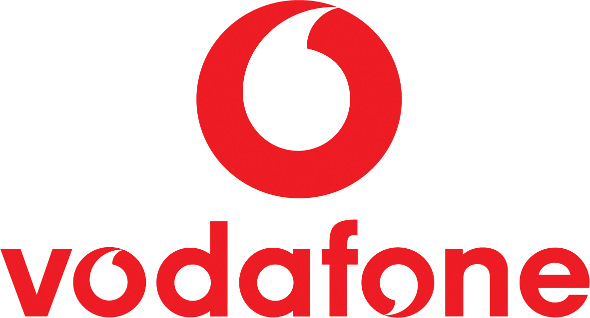
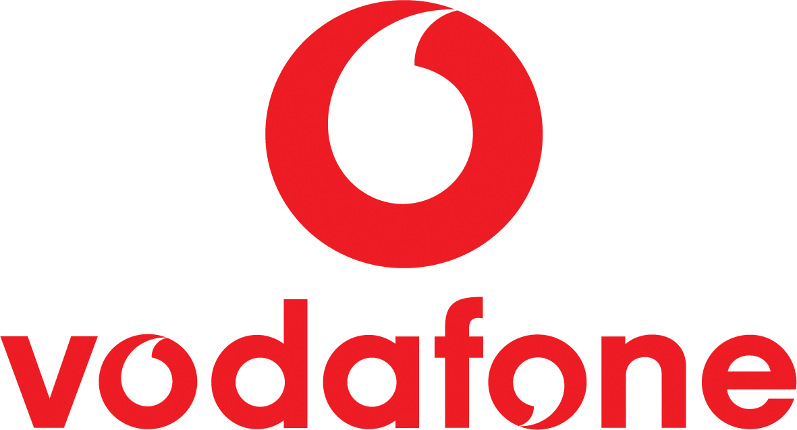

My Experience
DevOps / Platform Cloud Engineer · Cost & Resources Manager
As a DevOps and Platform Cloud Engineer, I manage requests from a wide range of stakeholders and handle infrastructure issues across major cloud platforms like AWS, Azure, and GCP. My daily work involves ensuring that DevOps pipelines align with established standards, coordinating production releases across multiple teams, and implementing a maintenance strategy aimed at reducing incident tickets.
I lead the industrialization of internal operations by training and onboarding new DevOps engineers and ensuring they're aligned with company practices. I also manage the operational budget for all cloud resources, continuously monitoring costs and reallocating them appropriately across teams and countries.
In 2024, I successfully implemented cost optimization strategies that led to savings of over €500,000 across all accounts. Additionally, I oversee the purchase of key software tools to support development and business process improvements, and I evaluate cost estimates provided by external suppliers and contractors, approving their proposed full-time efforts when necessary.
DevOps Cloud Engineer · Client-Facing Role
In a more client-facing role, I represent my team directly with the customer on all cloud-related topics. I participate in daily discussions with stakeholders, provide architectural input for new projects, and lead third-party vendors using a shared Jira board for coordination. This role has also introduced a managerial dimension to my responsibilities.
DevOps Cloud Engineer · Cloud Migration & Automation
During the cloud migration phase, I was responsible for moving applications from Google Cloud Platform to AWS. My work focused on developing automation pipelines using Infrastructure as Code to implement both architectures and applications efficiently and securely.
AWS Operations Support
I started my journey by supporting operational teams, resolving service tickets, and monitoring system logs to quickly detect and troubleshoot issues. This helped ensure reliability, performance, and continuity of service for all environments involved.
Clients

 

About Me
I'm a DevOps and Cloud Engineer with a strong focus on automation, cost optimization, and reliability. I currently manage cloud infrastructure across AWS, Azure, and GCP, lead production releases, and enforce security and compliance through CI/CD governance.
Download My Resume